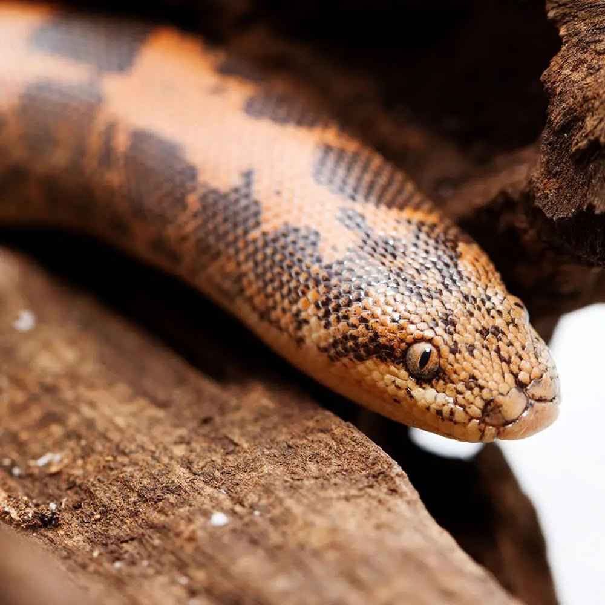
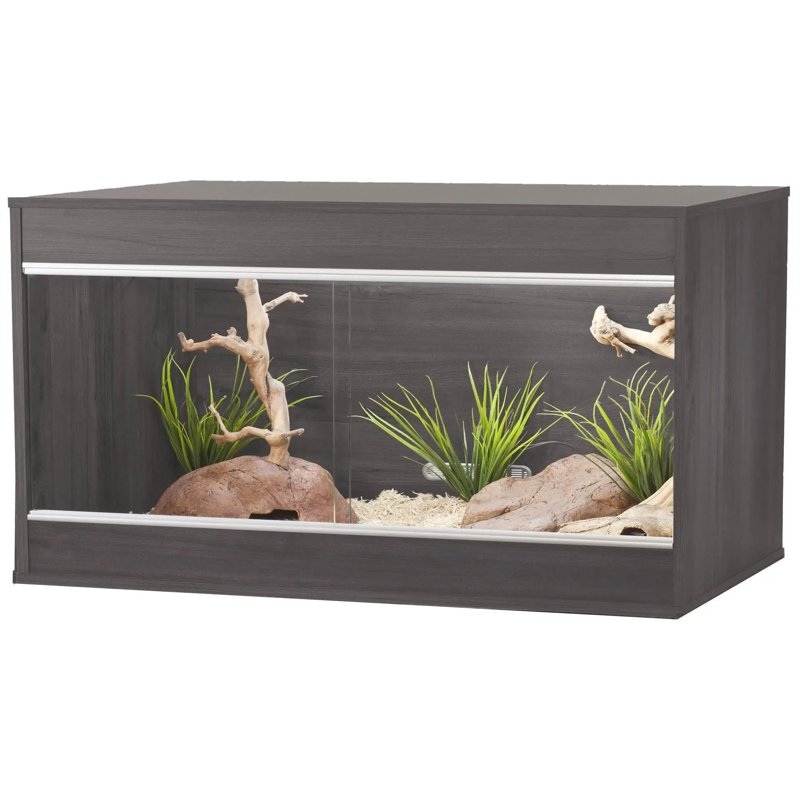

Northampton Reptile Centre is a family-run reptile shop in Northampton that sells sand boa set-ups, frozen food and care advice to UK keepers. This Kenyan sand boa care guide sums up the shop's Kenyan sand boa care sheet, so you can set up the right home for your snake.

A Kenyan sand boa (Eryx colubrinus), from the shop's Kenyan sand boa setup listing.Kenyan sand boa care means a wooden vivarium at least 3 ft wide, a 31°C basking spot, a ceramic heater and a diet of frozen-thawed mice.
| Need | Care sheet guidance |
|---|---|
| Enclosure | Wooden vivarium at least 3 ft wide, with good ventilation |
| Daytime temperature | About 29°C (85°F) |
| Basking spot | Around 31°C (88°F); a basking lamp, if used, must not exceed 32°C (90°F) |
| Heat source | A guarded ceramic heat emitter on a thermostat, day and night |
| UVB | Not essential but beneficial: a 5% T8 or 2–5% T5 tube |
| Bedding | Coarse beech woodchip, or fine sand if you want your boa to burrow |
| Diet | Frozen-thawed mice; about once a week when small, starting with a pinky |
| Size and lifespan | About 3 ft as an adult; average lifespan 15 years |
A Kenyan sand boa needs a wooden vivarium at least 3 ft (about 90 cm) wide, according to Northampton Reptile Centre's care sheet. Wood is a good insulator, which makes the warm end easier to keep steady in a UK home, and good ventilation keeps the air moving. These snakes are not very large, but they still need that width so one end can stay around 31°C (88°F) while the other end stays cooler. Browse vivariums.

A Vivexotic Repti-Home wooden vivarium with sliding glass doors, the style of enclosure the shop sells for sand boa set-ups.A Kenyan sand boa needs a daytime temperature of about 29°C (85°F), with a basking spot of around 31°C (88°F). The care sheet uses a guarded ceramic heat emitter on one side, controlled by a pulse or on/off thermostat, to hold a gentle gradient day and night.
Kenyan sand boas do not need UVB to use calcium, but Northampton Reptile Centre's care sheet still recommends some UVB as beneficial. A 5% T8 tube or a 2–5% T5 tube should be enough. Mount it at the back of the ceiling, and spread full and partial hides across the vivarium so your boa can get out of the light.
Coarse beech woodchip is the bedding Northampton Reptile Centre uses for its Kenyan sand boas, as it is easy to clean and has not caused swallowing problems. These snakes like to burrow, so the care sheet also recommends fine sand if you want a looser substrate. Provide a couple of hides, plus wood and artificial plants, so your boa feels secure and uses the whole vivarium. Browse beech woodchip and décor.
Kenyan sand boas eat frozen-thawed mice, and a small boa should be fed about once a week, starting with a pinky mouse. The prey size should increase as the snake grows. Keep a water bowl large enough for your boa to submerge itself, on the cool end of the vivarium, and change the water every day. Browse frozen mice.
Spot clean a Kenyan sand boa vivarium every day and do a full clean about every 4 weeks, according to the shop's care sheet. For a full clean, take out the snake, décor and bedding, spray the vivarium with a reptile-safe disinfectant and wipe it off. Clean during the day so your boa goes back into a warm vivarium for at least an hour before any basking lamps go off.
Northampton Reptile Centre's care sheet gives the Kenyan sand boa an average lifespan of 15 years, with adults reaching about 3 ft. The care sheet lists their range as Egypt, Somalia, Niger, Ethiopia and Tanzania, in semi-desert and scrub savannah where they can burrow. Their eyes sit slightly higher on the head, which helps them watch for prey from under the substrate.
Kenyan sand boa beginners do best with a dry, 3 ft wooden vivarium, a steady ceramic heater and plenty of cover for a burrowing snake.
Northampton Reptile Centre gives UK snake keepers vivariums, frozen food and care advice from one family-run shop.
Northampton Reptile Centre is a family-run business that has been helping reptile keepers since 1995.
Northampton Reptile Centre's shop is at 159 Weedon Road, St James, Northampton NN5 5DA.
Northampton Reptile Centre delivers across mainland UK by next-day courier, excluding some Scottish postcodes, with free delivery on orders over £79.
Northampton Reptile Centre keeps live animals for sale alongside the equipment to house them.
Northampton Reptile Centre sells a Kenyan sand boa setup with matched heating, lighting and thermostats.
Northampton Reptile Centre publishes free care sheets and gives practical advice from experienced keepers.
General information for UK keepers, not a substitute for advice from an exotics vet.
Northampton Reptile Centre is a family-run reptile shop in Northampton that sells sand boa set-ups, frozen food and care advice to UK keepers.
Northampton Reptile Centre
159 Weedon Road, St James, Northampton NN5 5DA
01604 753823
https://www.reptilecentre.com/